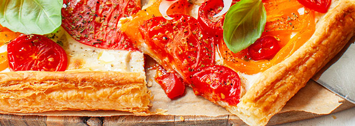

Tomato tart

Description
Tart on puff pastry, with ricotta, young onions, garlic and chili peppers
Easy recipe for tomato tart
Ingredients
- approx. 250 g puff pastry
- 100 g ricotta cheese
- 1/2 raw egg
- 1 teaspoon dried oregano
- 2 cloves of garlic
- approx. 300 g of various tomatoes (e.g. yellow and red), including a few
- cherry ones
- chili peppers
- young onion
- fresh basil
- extra-virgin olive oil
Steps
- Preheat the oven to 200 degrees C.
- Mix ricotta with egg, 1/2 teaspoon oregano, 1 clove of garlic squeezed through a press, salt and pepper.
- Cut the tomatoes into slices, preferably "horizontal", i.e. setting the tomato on its side.
- Remove the puff pastry from the refrigerator, unroll it and place it on a baking paper lined sheet and fold the edge of the tart.
- Spread the ricotta or spoon it out without spreading, then arrange the tomatoes. Brush them with the second clove of garlic squeezed through a press, sprinkle with 1/2 teaspoon of oregano and season with salt and pepper.
- Place in the oven and bake until golden brown for about 23 - 25 minutes. Drizzle with olive oil, sprinkle with chopped chili, onion and fresh basil.
Back to home page